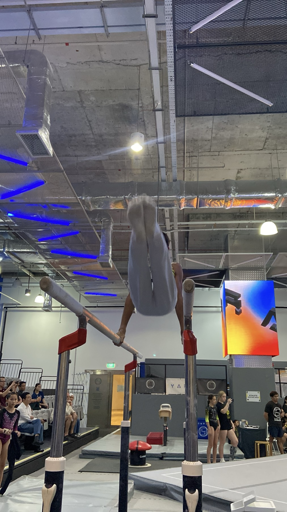

Four apparatusBy selection
Women's Artistic (WAG)
Vault, uneven bars, balance beam and floor exercise. WAG training builds strength, agility and grace, and beside the physical work it builds the composure that competition demands, one rep, one plateau and one breakthrough at a time.
- SGLP and USAG Levels 1 to 10, from compulsory to optional routines
- Women's Artistic squads at all four centres, Men's Artistic at Dover and Jurong